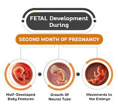

At two months pregnant, you might be feeling overwhelmed, excited, worried, happy — or all of the above, and more. That’s pregnancy for you! There’s no doubt you’ll have a lot on your mind this month. Read on to learn more about common pregnancy symptoms, how your baby is developing during the coming weeks, and what else is in store for you at two months pregnant.
At two months pregnant, some commonly experienced pregnancy symptoms include:
Pregnancy-related nausea and vomiting often strikes between week four and week nine. Contrary to popular belief, morning sickness can hit at any time of day, not just in the morning. It might help to maintain a balanced diet, staying away from greasy and spicy foods, and to go for smaller, more frequent meals. When you wake up in the morning, try eating some plain crackers before getting out of bed to help stabilize your blood sugar levels. Rest, stay hydrated, and sip ginger ale or ginger tea to calm your stomach. Not all moms-to-be experience morning sickness, but if you do, take some comfort in the fact that it frequently subsides by the time you reach the second trimester. If your symptoms are particularly bad, speak to your healthcare provider as it could be a sign of a more severe form of morning sickness called hyperemesis gravidarum.
Don’t be surprised if you’re a bit more emotional than usual. Your body is experiencing a surge of hormones, which can lead to some wild shifts in your emotions. Your moods might also fluctuate based on how you’re feeling physically or mentally. For example, if you have morning sickness and this is making you feel uncomfortable and stressed, then it’s natural to feel down from time to time.
Certain foods, or even smells, that you once enjoyed can start to seem unappealing and may even trigger nausea now that you’re pregnant. If you find your tastes have changed, it’s OK to stick to blander foods until your appetite returns (usually in the second trimester). Just make sure to speak to your healthcare provider about ways to keep up a healthy diet if certain foods are off the menu temporarily. You can also download our guide to nutrition during pregnancy for some helpful tips.
Pregnancy hormones can also relax the valve that connects your stomach and esophagus. When this happens, stomach acid can leak into the esophagus, causing this uncomfortable symptom. Spicy or fried foods are best avoided if you suffer from heartburn.
Feeling a little backed up can be a normal symptom of early pregnancy. Constipation may be caused by the hormone progesterone, which can slow digestion. Your prenatal vitamins can also lead to constipation if they contain a lot of iron. Staying hydrated and active can help, though.
You might be familiar with this symptom from your monthly menstrual cycle, but it can also crop up as an early sign of pregnancy. As usual, blame it on hormones if your jeans are now fitting a little bit tighter than normal.
Being pregnant takes a lot of energy, so it’s perfectly normal to feel worn out or just more sleepy than usual. Rest when you can, even if this means saying “no” to a few things. A healthy diet and moderate exercise can sometimes give you a little energy boost. Plus, take comfort in the fact that many moms-to-be say their energy levels increase in the next trimester.
This month, your little one starts to develop a tiny nose, mouth, and ears. Eyelids have formed, and they’ll stay fused shut until the latter part of the second trimester. There’s also some important organ development happening this month. Your little one’s lungs now connect to the throat with breathing tubes. Like the lungs, the heart still has a lot of growing to do, but it’s now beating about 105 beats per minute — how about that! The amniotic sac is now developed and filled with amniotic fluid. Its important job is to house and protect your little one from now until birth. That’s not all! At the end of week eight, or approximately the end of your second month, there’s another exciting milestone: Your little one graduates from an embryo to a fetus, in medical terms, that is.
At the end of you being two months pregnant, your baby’s size could be about half an inch long, or in other words about the size of a raspberry.
Check out these illustrations for a glimpse at what your baby might look like when you’re two months pregnant:
Don’t expect to see too much of a belly bump at two months pregnant. At this stage, your body probably won’t look dramatically different. (Read more about when you might start showing.) What you might notice, though, is that in addition to some sensitivity and soreness, your breasts may look fuller. If your pre-pregnancy weight was within the normal BMI range, your healthcare provider may recommend a target weight gain of 25 to 35 pounds during your pregnancy, and at least two of these pounds will likely be gained by your breasts. Over the course of the first trimester, you are likely to gain about one to five pounds. Try our Weight Gain Calculator to learn how much weight you may be advised to gain during the rest of your pregnancy. Your healthcare provider is your go-to resource for advice about healthy weight gain and nutrition during pregnancy. Usually, you’ll only need to add about 300 extra calories to your diet each day, but this amount may increase later in your pregnancy. Your provider will be able to advise you based on your specific situation.
At two months pregnant, you’re well into the first trimester, which spans week 1 to week 13. If you’re wondering how many weeks two months pregnant is, the answer can vary somewhat because weeks don't fit evenly into months, and you could be at the start or the end of your second month. So, you may want to think of two months pregnant as covering week five through week eight.